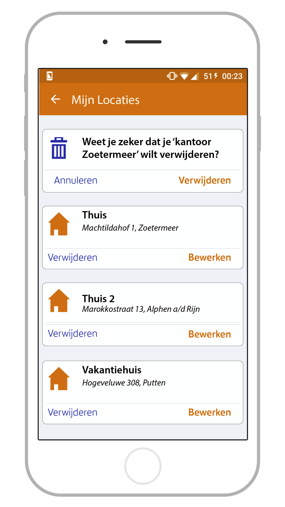
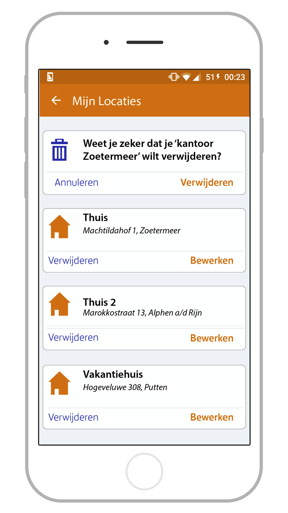

Debrief
In 2018 stond PostNL aan het begin van een nieuwe fase, hierbij is PostNL de mogelijkheden gaan onderzoeken voor nieuwe functionaliteiten voor hun eigen app. Hierbij hebben ze hulp gevraagd aan de studenten CMD van de hogeschool Amsterdam. Zo hebben studenten geholpen onderzoek te doen naar nieuwe functionaliteiten en hier een prototype en advies bij uitgebracht. Dit prototype is gebasseerd op gebruikersonderzoek, usability tests en interviews.
De oplossing
Uit de verschillende onderzoeken is gebleken dat er een vraag is vanuit de (potentiële) gebruikers
om op meerdere adressen pakketjes te kunnen traceren via de app. Denk hierbij aan een kantoor of 2e woning waar pakketjes verwacht worden.
Wanneer pakketjes geleverd worden op bijvoorbeeld een kantoor moet er ook rekening gehouden worden met de privacy van de ontvanger. Je wilt immers
niet dat het hele bedrijf in kan zien dat jij een pakketje verwacht of waar deze vandaan komt.
Hieronder een overzicht van de belangrijkste functionaliteiten met uitgewerkte schermen.


 
